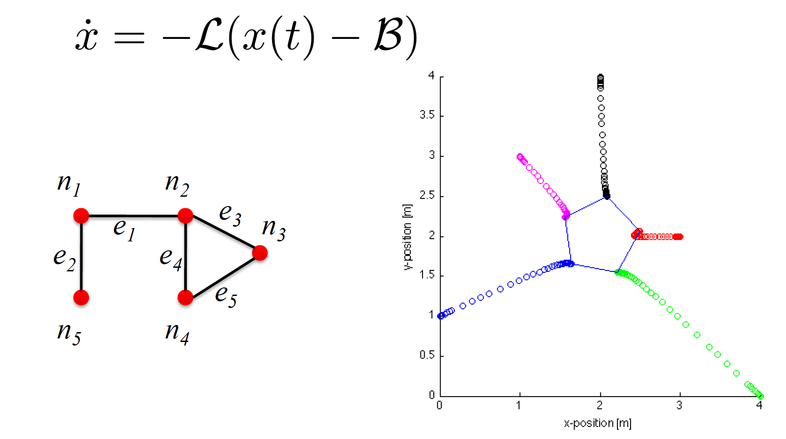
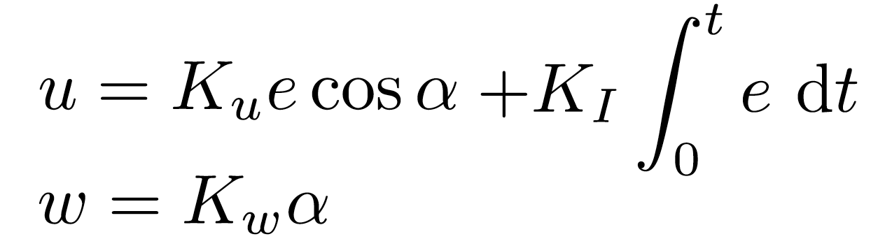

Lesson 5 : Collective Movements in Animal and Artificial Societies
Phenomena
Rapid directed movement of the whole flock
Reactivity to predators (flash expansion, fountain effect)
Reactivity to obstacles
No collisions between flock members
Coalescing and splitting of flocks
Tolerant of movement within the flock, loss or gain of flock members
No dedicated leader
Different species can have different flocking characteristics
Benefits
Energy saving
Navigation accuracy
Flocking in Simple Virtual Agents : Reynolds’ Boids
Rules
Separation : Avoid collisions with nearby flockmates
Alignment : Attempt to match velocity (speed and direction)
Cohesion : attempt to stay close
Screen Shot 2018-01-27 at 15.45.37
Arbitrating rules
Time constant linear weighted sum did not work in front of obstacles
Time varying, nonlinear weighted sum worked better
=> mixing principles for better behaviour (subsumption architectures)
Sensory system
Local, almost omni-directional sensory system
Perfect relative range and bearing system: no occlusion, no noise, all teammates perfectly identified within the range of detection
Immediate response: one perception-to-action loop (no sensory, computational capacity considered)
Homogeneous system (all exactly the same sensory system)
“Natural” nonlinearities: negative exponential of the distance (linear response also tested: bouncy, cartoony)
Obstacle detection
Different sensory system than for perceiving teammates !
Approach 1 : potential fields (poor results)
Approach 2 : steer-to-avoid (find the edge of obstacle, aim for one body length above it)
Flocking in real robots (2D)
Issues
general
Noise in the range and bearing measurement, communication
Homogeneous system impossible: even from manufacturing point of view small discrepancies -> calibration might be the key for an efficient system
Immediate response impossible: computational and sensory capacity limited!
Identifierfor each teammate possible but scalability issues
Non holonomicity of the vehicles
for local range and bearing systems
Depending on the system used for range and bearing: occlusion possible (line of sight)!
Nonlinearities determined by the underlying technology: might need to compensate with control for obtaining the desired effect!
Second order variables (velocity) estimated with 2 first order measures (position) but takes time (the noisier the signal the more filtering needed, the longer the time)!
Examples
Kelly’s flocking
Separation and cohesion only (alignment not applied)
Migration urge/script replaced by leadership
All on-board (IR system for local communication, range and bearing, fast 10 Hz)
Hayes’ Flocking
Separation, cohesion, and alignment
Range & bearing using off-board system (overhead camera and LAN radio channel)
based on the formation shape (line, column, diamond, …)
based on the reference structure (unit-center, leader, neighbor, …)
Screen Shot 2018-01-27 at 15.56.03Screen Shot 2018-01-27 at 15.56.13
Example
Fredslund % Mataric 2 : Neighbor-referenced architecture based on a on-board relative positioning; single leader always 3 . Neighbours detected by Laser Range Finder (LRF) for relative range, relative angle through camera pan angle. ID of robot found with color on visual beacon.
Give each node a state \(x_i\). The goal is to have \(\underset{t \rightarrow \inf}{lim} x_i(t) = x^* \text{ , } \forall i\)
Solving it requires using the Laplacian Matrix : \(\dot{x}(t) = \mathcal{L} x(t)\). We can use this to solve the rdv problem in 2D by setting the Laplacian for each dimension (x,y)
Holonomic robots
Holonomic total number of degree of freedom = number of controllable degree of freedom. From the point of view of mobility: a mobile robot is holonomic if it can move in any direction at any point in time.
If we have holonomic robots we can always go in the direction the Laplacian method gives us. If we don’t, we need to transform the direction vector from total DOFs to controllable DOFs. Examples:
Screen Shot 2018-01-27 at 16.06.30
or
Screen Shot 2018-01-27 at 16.06.30
Configurations
By adding a bias vector, we can modify the state (or assumed position):
3
Obstacle avoidance
When an obstacle is detected by a robot, its position is propagated to other robots. Each robot updates its neighbors list if necessary by adding a repulsive agent (negative weights in \(\mathcal{W}\).
Formation control
Change not only the weights but also the control law.
4
Take Home messages
Flocking and shoaling phenomena in vertebrates are self-organized structures emerging from local rules
Flocking can be considered a loose formation
Major breakthrough through Reynold’swork and his three rules
Major differences between virtual and real agents in communication, sensing, actuation, and control
Formations and flocking can be obtained in a number of ways, depending on the underlying inter-robot positioning technology and corresponding control rules
Graph-based formalism is powerful and allow for fully distributed control while maintaining theoretically provable properties